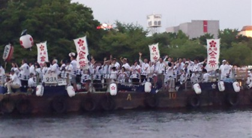
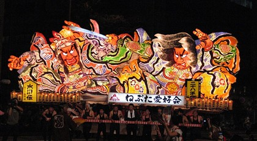

Highlights
-
Gion Matsuri

Gion Matsuri is one of Japan's most famous traditional festivals. It fills central Kyoto with decorated yamaboko floats, shrine rituals, evening street celebrations, and historic processions. The biggest parade days are July 17 and July 24. Date: July 1-31, 2026. Location: Yasaka Shrine and central Kyoto, Kyoto.
-
Tenjin Matsuri

Tenjin Matsuri is a major Osaka festival honoring Sugawara no Michizane. The celebration includes shrine ceremonies, street processions, a river boat parade on the Okawa River, and a fireworks finale that lights up the water. Date: July 24-25, 2026. Location: Osaka Tenmangu Shrine and Okawa River, Osaka.
-
Aomori Nebuta Matsuri

Aomori Nebuta Matsuri is known for enormous illuminated floats shaped like warriors, legends, and dramatic scenes. The floats move through Aomori City with taiko drums, flutes, and haneto dancers, creating one of northern Japan's biggest summer celebrations. Date: August 2-7, 2026. Location: Aomori City, Aomori Prefecture.
-
Tokushima Awa Odori

Tokushima Awa Odori is Japan's largest Awa dance festival. Groups of dancers and musicians move through the streets with shamisen, taiko, flutes, and bells while crowds gather for the energetic Obon dance tradition. Date: August 12-15, 2026. Location: Tokushima City, Tokushima Prefecture.